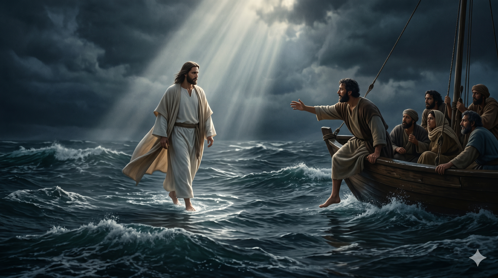
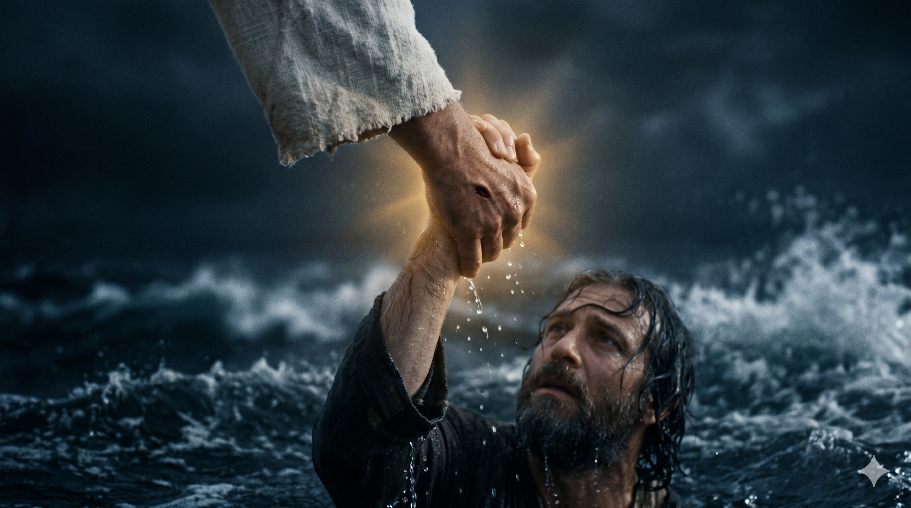

갈릴리 호수의 한밤중, 거센 바람과 파도 위에 한 사람이 흰 옷자락을 휘날리며 조용히 걸어오신다. 그분의 발 아래 거품이 일고, 그 발자국 위에 한 줄기 달빛이 길을 낸다. 풍랑에 흔들리는 작은 배에서 한 어부가 뱃전 너머로 한 발을 내딛는 그 순간 — 사천 년의 어부의 직관이 한 분의 한 마디 앞에서 한 번 더 비켜선다.
밤 사경에 예수께서 바다 위로 걸어서 제자들에게 오시니 제자들이 그가 바다 위로 걸어오심을 보고 놀라 유령이라 하며 무서워하여 소리지르거늘 예수께서 즉시 이르시되 안심하라 나니 두려워하지 말라 베드로가 대답하여 이르되 주여 만일 주님이시거든 나를 명하사 물 위로 오라 하소서 하니 오라 하시니 베드로가 배에서 내려 물 위로 걸어서 예수께로 가되 바람을 보고 무서워 빠져 가는지라 소리 질러 이르되 주여 나를 구원하소서 하니 예수께서 즉시 손을 내밀어 그를 붙잡으시며 이르시되 믿음이 작은 자여 왜 의심하였느냐 — 마태복음 14:25–31
밤 사경(새벽 3시에서 6시 사이) — 한 해 가운데서도 가장 어두운 시간, 갈릴리 호수의 거센 바람 한복판에 한 작은 배가 흔들리고 있었습니다. 제자들은 노를 저어 거의 십 리(약 5킬로미터)나 나아갔으나 바람이 거슬려서 더 이상 앞으로 갈 수 없었습니다(요 6:19). 그 어둠과 풍랑 가운데, 한 분이 물 위를 걸어 그들에게 다가오십니다. 어부 출신인 제자들도 그 광경 앞에서는 자기 평생의 경험이 무너져 내립니다 — "유령이라 하며 무서워하여 소리지르거늘"(마 14:26). 사람의 직관은 풍랑 위에 한 사람이 걸을 수 있다는 사실을 받아들이지 못합니다. 그러나 그 두려움 가운데 한 음성이 들립니다 — "안심하라 나니 두려워하지 말라"(마 14:27). 헬라어로는 "에고 에이미"(ἐγώ εἰμι), 곧 "내가 곧 그니라" — 출애굽기에서 모세에게 자신을 계시하신 그 이름과 같은 한 말씀입니다. 곧 그 풍랑 위에 걸어오신 한 분은 단순한 한 사람이 아니라, "스스로 계신 그분"이 친히 한 풍랑의 한복판으로 걸어오신 것이었습니다.
그 한 음성을 들은 베드로는 누구도 묻지 않은 한 가지를 묻습니다 — "주여 만일 주님이시거든 나를 명하사 물 위로 오라 하소서"(마 14:28). 다른 제자들은 두려움 속에서 자기 자리를 지켰습니다. 그러나 베드로 한 사람만은 그 두려움 속에서도 한 마디의 명령을 구합니다 — "오라" 하시면 한 발을 내딛겠다는 것입니다. 그분의 한 마디 "오라"가 떨어지자, 그는 정말 배에서 내려 물 위로 한 발자국을 내딛습니다. 그 한 발은 그 시대의 어떤 신학자도, 어떤 어부도 내딛어 본 적이 없는 한 발이었습니다. 그러나 두 번째, 세 번째 발자국에서 그는 자기 발 아래의 풍랑을 봅니다. "바람을 보고 무서워 빠져 가는지라"(마 14:30). 한 사람의 시선이 한 분의 얼굴에서 자기 발 아래의 파도로 옮겨진 그 한 순간, 그는 가라앉기 시작했습니다. 그러나 가장 깊은 은혜는 그 다음에 임합니다 — "예수께서 즉시 손을 내밀어 그를 붙잡으시며"(마 14:31). "즉시"(εὐθέως, 유데오스)라는 한 단어 안에, 그분이 한 사람의 가라앉음을 한 번도 멀리서 구경하지 않으신다는 한 진리가 깊이 새겨져 있습니다.

한 어부의 손목을 붙잡으신 한 분의 단단한 손, 풍랑이 두 사람의 발목 아래로 거세게 부서진다. 가라앉던 한 사람의 가슴 위에 그분의 한 마디가 부드럽게 닿는다 — "믿음이 작은 자여 왜 의심하였느냐." 그 책망마저 사랑이 되는 한밤중의 거룩한 손길.
우리는 자주 베드로의 두 발 사이에 서 있습니다. 한 발은 한 분의 한 마디를 향해 내딛은 믿음의 발이고, 다른 한 발은 자기 발 아래의 풍랑을 보고 흔들리는 의심의 발입니다. 베드로의 한 이야기를 너무 단순하게 "그가 의심해서 가라앉았다"는 책망의 이야기로만 읽지 마십시오. 그 자리에 있던 다른 열한 명의 제자들은 한 번도 배 밖으로 발을 내딛지 않았습니다. 베드로의 가라앉음은, 적어도 한 번이라도 배 밖으로 발을 내딛어 본 사람만이 경험할 수 있는 가라앉음이었습니다. 그러므로 오늘 당신이 한 번이라도 배 밖으로 발을 내딛어 본 사람이라면 — 자기 안전한 자리에서 한 분의 한 마디를 향해 한 발을 내딛어 본 사람이라면 — 그 가라앉음의 자리에서 자신을 너무 책망하지 마십시오. 그분의 손은 가라앉는 자에게만 내밀어집니다. 안전한 배 안에 머문 사람에게는 그분의 손이 닿지 않습니다.
또 한 가지 — 베드로가 가라앉기 시작한 한 순간을 돌아보면, 그것은 그의 시선이 한 분의 얼굴에서 발 아래의 풍랑으로 옮겨진 한 순간이었습니다. 한 신앙인의 가라앉음은 대부분 죄를 지어서 일어나는 것이 아니라, 시선이 옮겨져서 일어납니다. 그분의 얼굴을 바라보던 시선이 어느덧 자기 환경의 풍랑으로 옮겨진 그 한 순간, 사람은 가라앉습니다. 그러므로 오늘 당신이 가라앉는 듯한 자리에 있다면, 자기 풍랑을 다스리려 애쓰기 전에 한 가지를 먼저 점검해 보십시오 — "내 시선이 지금 어디를 향하고 있는가." 시선이 다시 그분의 얼굴로 옮겨지는 그 한 순간, 비록 풍랑은 그대로 있어도 당신의 발은 다시 그 풍랑 위에 한 발을 내딛게 됩니다. 그것이 한 어부가 평생 잊을 수 없었던, 한밤중 갈릴리 위의 거룩한 한 교훈이었습니다.
가라앉는 자만이 그분의 손을 만져 봅니다 — 안전한 배 안에는 그분의 손이 닿지 않습니다.
사람의 가라앉음은 죄에서 오지 않고, 시선의 옮겨짐에서 옵니다.
오늘, 자기 풍랑이 아닌 그분의 얼굴을 향해 한 발자국 내디디십시오.